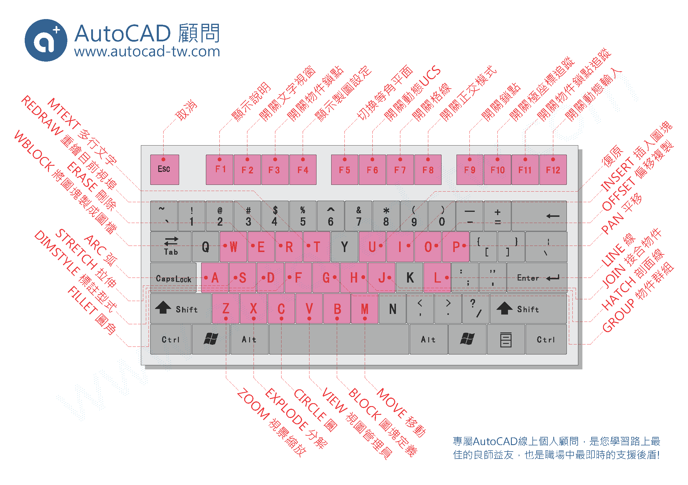
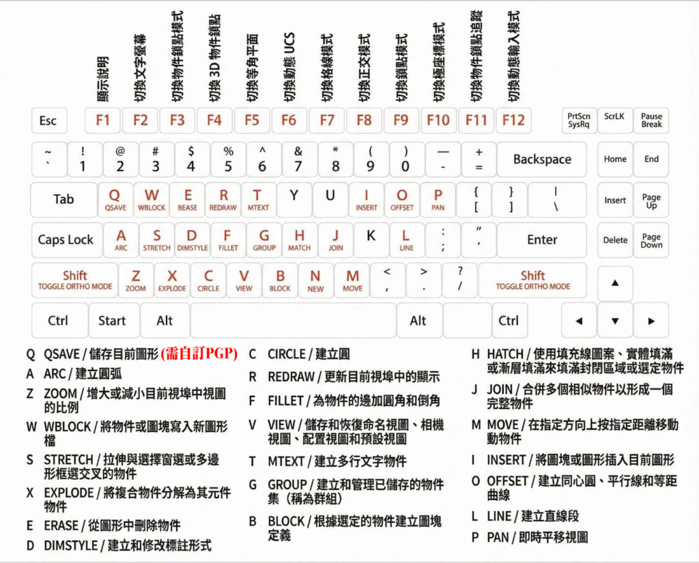
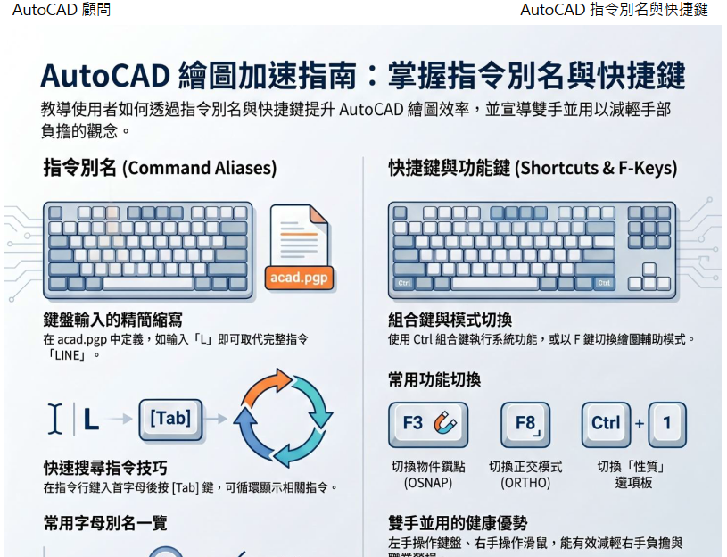

你常常用哪一個鍵盤快捷鍵呢！
我是自定義「Q」當做儲存，所以「Q」每天按個100次吧...
下載： https://app.box.com/s/08bh3shp0ye6ge7k8s3rfpiglwfd33oz
備用下載： https://drive.google.com/file/d/1Znt6R_mQlF3MrJmHTx5AlB7_m7w5oJvU/view?usp=sharing

👇延伸閱讀 前往下載PDF👇
[教學]『指令別名』與『快捷鍵』